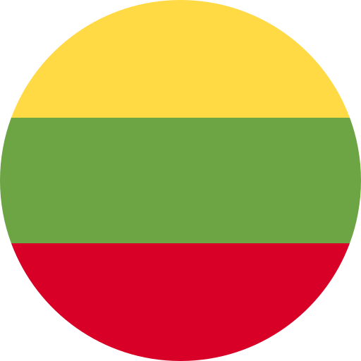

Yaşlılarla çalışan yetişkin eğitimcileri, COVID-19 salgını bağlamında 65 yaş üstü öğrencilerin ruh sağlığını iyileştirmek amacıyla MBAT kullanımı hakkında kapsamlı metodolojik materyallerle donatmak.
Yaşlılara günlük yaşamda MBAT’yi nasıl kullanacakları konusunda kolay erişilebilir ve kullanımı kolay bir araç sağlamak.
E-öğrenme web platformunda ve Android mobil uygulamasında bulunan yetişkin eğitimciler ve yaşlılar için özel olarak hazırlanmış bir MBAT eğitim paketi oluşturmak.
Yaşlıların zihinsel sağlığını ve genel refahını geliştirmek için kapsamlı ve kişiselleştirilmiş girişimleri hayata geçirerek, destekleyici bir ortam oluşturmayı amaçlıyoruz. Bu ortam, duygusal dayanıklılığı, bilişsel uyarımı ve yaşlı topluluğunun benzersiz ihtiyaçlarına uygun olarak düzenlenen sosyal etkileşimi önceliklendirecek şekilde tasarlanacaktır.

Geniş bir demografik yelpaze içinde dolaşan yetişkin eğitimcilerden yaşlılara ve ilgili paydaşlara kadar, döngüsel ekonomi prensiplerinin yaygın benimsenmesini ve anlaşılmasını kolaylaştırmak.
Mind-Body Awareness Training (MBAT) programının uygulanmasıyla aktif olarak ilgilenen yetişkin eğitim kuruluşları arasında güçlü bir uluslararası ağ oluşturuluyor. Bu ağ, işbirliği temelli bilgi alışverişi için dinamik bir platform olarak hizmet edecek, kültürlerarası perspektifleri geliştirecek ve yenilikçi öğretim metodolojilerinin kolektif ilerlemesini teşvik edecektir.
Avrupa Komisyonu’nun bu yayının üretimine verdiği destek, yalnızca yazarların görüşlerini yansıtan içeriğin onaylandığı anlamına gelmez ve burada yer alan bilgilerin herhangi bir şekilde kullanılmasından Komisyon sorumlu tutulamaz. Proje Numarası: 2021-…